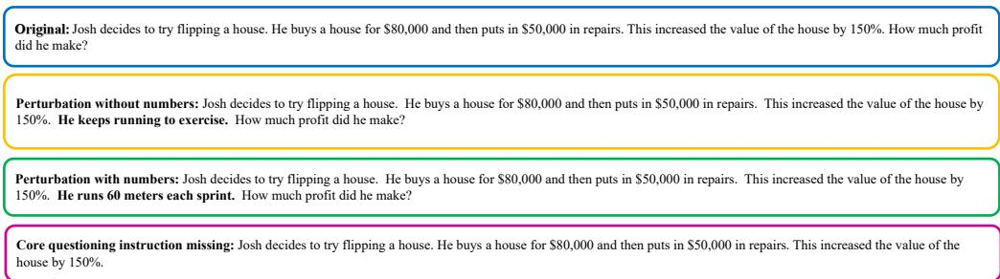

📝 微观深度解读
2025-11-12
为您精选了 6 篇高质量 AI 论文的深度解读
多代理框架
对话系统
响应改进
个性化响应
大型语言模型
推荐分数: 0.538
📖 简介：本文提出了一种多代理框架，通过动态选择和协调不同角色的代理，针对对话系统中的事实性、个性化和连贯性进行响应改进。该方法有效解决了大型语言模型在生成个性化和准确响应时的不足，实验结果显示其在处理复杂对话任务时显著优于现有基线方法。

数值敏感性
鲁棒性
大型语言模型
数学推理
扰动框架
推荐分数: 0.522
📖 简介：本文提出了一种新的扰动框架，通过注入语义无关的扰动句子并逐步增加扰动强度，评估大型语言模型（LLMs）在复杂环境中的数学推理能力。实验结果显示，LLMs在面对数字扰动时表现显著下降，尤其是小型模型，揭示了其推理能力的局限性，并表明其依赖于记忆模板而非逻辑推理。

查看详细解读 →
自组织映射
拒绝能力
大型语言模型
有害提示
安全性
推荐分数: 0.476
📖 简介：本文提出了一种新方法，利用自组织映射（SOM）从大型语言模型中提取多个拒绝方向，以增强模型对有害提示的拒绝能力。通过训练SOM识别有害提示的神经元并与无害提示的中心进行比较，验证结果显示该方法在拒绝能力上优于单一方向基线和专门的破解算法，有效提升了安全性。

推理能力
大语言模型
动态选择性迭代
双因果注意力机制
计算效率
推荐分数: 0.474
📖 简介：本文提出了“Think-at-Hard (TaH)”方法，旨在提高大语言模型（LLM）的推理能力和计算效率。TaH通过动态选择性迭代，仅对难度较大的令牌进行深度推理，避免了对简单令牌的过度思考。引入的双因果注意力机制增强了信息流动，实验结果显示，TaH在多个基准测试中显著提升了准确率，同时保持了低计算开销。

可训练图记忆
大语言模型
复杂决策
强化学习
战略推理
推荐分数: 0.469
📖 简介：本文提出了一种创新的可训练多层图记忆框架，旨在提升大语言模型（LLM）代理在复杂决策任务中的推理能力。通过将代理经验抽象为结构化决策路径，并结合强化学习优化，该框架有效改善了LLM的战略推理和泛化能力，显著提高了任务表现和训练效率。

上下文压缩
大型语言模型
令牌压缩
计算需求
压缩比
推荐分数: 0.465
📖 简介：本论文提出了一种通过学习压缩令牌来实现大型语言模型（LLMs）上下文压缩的方法，显著降低了处理长序列的内存和计算需求。研究表明，经过微调的LLMs能够在不显著降低性能的情况下，将上下文压缩2到8倍，同时在3亿参数的LLaMA模型上实现了与其他压缩技术相当的效果，并获得更高的压缩比。